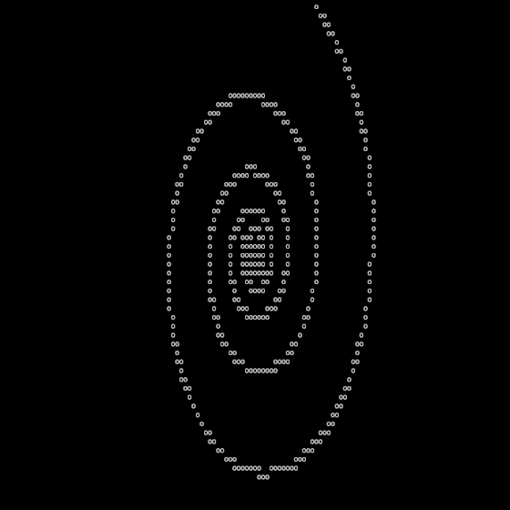

¶
№ 5/7
№ 1/1
Next project: → Mandelbrot set
Previous project: ← Game of Life (bash-life)

This script draws a logarithmic spiral to the terminal screen using the following parametric equations:
- x(t) = a · eb · t · cos(t)
- y(t) = a · eb · t · sin(t)
The script uses bc (basic calculator) for floating point operations since Bash cannot handle them internally. The script also uses tput to reset the terminal, and to position the cursor on the screen.
- logarithmic-spiral.tar.gz
- MD5: ea2532d4f2e909f9fd7b3e0098504566
- SHA-1: 74ef8180e72c3d0e4a989b465b4f8ae7efdf6535
- SHA-256: 01d99ad7e987c4c2cde2af2684455176d24545fdb137ccdc5602668da7f763aa